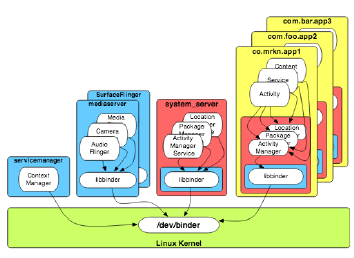
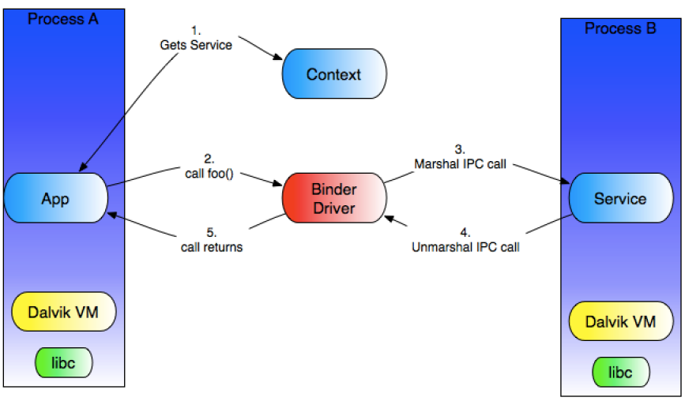

Figure 1: Binder [from Gargenta]
root@generic:/ # ps | grep binder
USER PID PPID VSIZE RSS WCHAN PC NAME
root 139 2 0 0 ffffffff 00000000 S binder
ashmem)
open, mmap, release, poll and
ioctl Look up man pages on Linux.
root@mako:/ # ls -l /dev/binder
root 10, 14 2014-05-11 22:43 /dev/binder

Figure 2: Android's Binder